Matplotlib Visualization¶
[1]:
import matplotlib
# matplotlib.use('WXAgg')
import matplotlib.pyplot as plt
import random
import pandas as pd
import numpy as np
# plt.style.reload_library()
# plt.style.use('dark-background')
%matplotlib inline
[2]:
def generateArray(size = 10):
return [random.randrange(1,30) for _ in range(size)]
[3]:
print(plt.style.available)
['Solarize_Light2', '_classic_test_patch', 'bmh', 'classic', 'dark_background', 'fast', 'fivethirtyeight', 'ggplot', 'grayscale', 'seaborn', 'seaborn-bright', 'seaborn-colorblind', 'seaborn-dark', 'seaborn-dark-palette', 'seaborn-darkgrid', 'seaborn-deep', 'seaborn-muted', 'seaborn-notebook', 'seaborn-paper', 'seaborn-pastel', 'seaborn-poster', 'seaborn-talk', 'seaborn-ticks', 'seaborn-white', 'seaborn-whitegrid', 'tableau-colorblind10']
[4]:
fig = plt.figure(figsize=(8,6))
ax = fig.add_subplot(111)
ax.set(title='Avg. Daily Temperature of Dec 2020',
xlabel='Day', ylabel='Temperature (in deg)',
xlim=(0, 30), ylim=(0, 35))
days = [1, 5, 8, 12, 15, 19, 22, 26, 29]
location1_temp = generateArray(9)
location2_temp = generateArray(9)
ax.plot(days, location1_temp, color='green', marker='o', linewidth=3, label="First",ls="--")
ax.plot(days, location2_temp, color='red', marker='o', linewidth=3, label="Second")
ax.grid(True)
ax.legend()
plt.show()
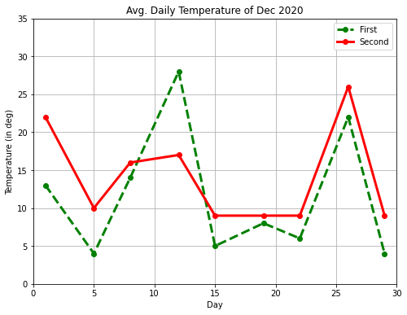
[5]:
fig = plt.figure(figsize=(8,6))
ax = fig.add_subplot(111)
ax.set(title='Avg. Daily Temperature of December 2021',
xlabel='Day', ylabel='Temperature (in deg)',
xlim=(0, 30), ylim=(0, 35))
days = [1, 5, 8, 12, 15, 19, 22, 26, 29]
temp = generateArray(9)
ax.scatter(days, temp, marker='p',s=[60],edgecolor='cyan')
ax.grid(True)
plt.show()

[6]:
fig = plt.figure(figsize=(8,6))
ax = fig.add_subplot(111)
ax.set(title='Avg. Quarterly Sales',
xlabel='Quarter', ylabel='Sales (in millions)')
quarters = [1, 2, 3]
x1_index = [0.8, 1.8, 2.8]; x2_index = [1.2, 2.2, 3.2]
sales_2016 = [28831, 30762, 32178]; sales_2017 = [25782, 35783, 36133]
ax.bar(x1_index, sales_2016, color='yellow', width=0.4, edgecolor='black', label='2016')
ax.bar(x2_index, sales_2017, color='red', width=0.4, edgecolor='black', label='2017')
ax.set_xticks(quarters)
ax.set_xticklabels(['Q1', 'Q2', 'Q3'])
ax.legend()
plt.show()
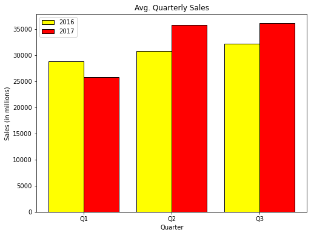
[7]:
fig = plt.figure(figsize=(6,6))
ax = fig.add_subplot(111)
ax.set(title='Avg. Quarterly Sales')
sales_2017 = [25782, 35783, 36133]
quarters = ['Q1-2017', 'Q2-2017', 'Q3-2017']
ax.pie(sales_2017, labels=quarters, startangle=90, autopct='%1.1f%%',shadow=True)
plt.show()
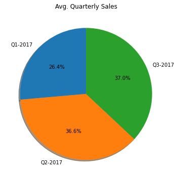
[8]:
import numpy as np
np.random.seed(100)
x = 60 + 10*np.random.randn(1000)
fig = plt.figure(figsize=(8,6))
ax = fig.add_subplot(111)
ax.set(title="Distribution of Student's Percentage",
ylabel='Count', xlabel='Percentage')
ax.hist(x,bins=100,color='green')
ax.axvline(x.mean(),c='r')
ax.axvline(np.median(x),c='y')
plt.show()
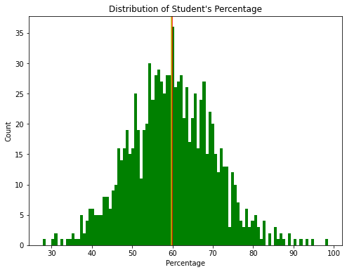
[9]:
import numpy as np
np.random.seed(100)
x = 50 + 10*np.random.randn(1000)
y = 70 + 25*np.random.randn(1000)
z = 30 + 5*np.random.randn(1000)
fig = plt.figure(figsize=(8,6))
ax = fig.add_subplot(111)
ax.set(title="Box plot of Student's Percentage",
xlabel='Class', ylabel='Percentage')
ax.boxplot([x, y, z], labels=['A', 'B', 'C'], notch=True, bootstrap=10000,patch_artist=True)
plt.show()

[10]:
fig = plt.figure(figsize=(10,8))
axes1 = plt.subplot(2, 2, 1, title='Plot1')
axes2 = plt.subplot(2, 2, 2, title='Plot2')
axes3 = plt.subplot(2, 2, 3, title='Plot3')
axes4 = plt.subplot(2, 2, 4, title='Plot4')
plt.show()

[11]:
fig = plt.figure(figsize=(10,8))
axes1 = plt.subplot(2, 2, (1,2), title='Plot1')
axes1.set_xticks([]); axes1.set_yticks([])
axes2 = plt.subplot(2, 2, 3, title='Plot2')
axes2.set_xticks([]); axes2.set_yticks([])
axes3 = plt.subplot(2, 2, 4, title='Plot3')
axes3.set_xticks([]); axes3.set_yticks([])
plt.show()
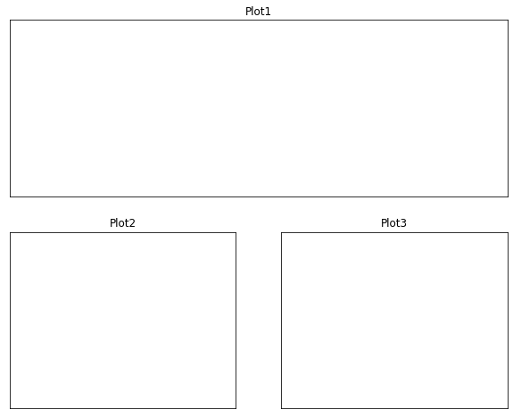
[27]:
import matplotlib.gridspec as gridspec
import matplotlib.pyplot as plt
fig = plt.figure(figsize=(10,8))
gd = gridspec.GridSpec(2,2)
axes1 = plt.subplot(gd[0,:],title='Plot1')
axes1.set_xticks([]); axes1.set_yticks([])
axes2 = plt.subplot(gd[1,0])
axes2.set_xticks([]); axes2.set_yticks([])
axes3 = plt.subplot(gd[1,-1])
axes3.set_xticks([]); axes3.set_yticks([])
plt.show()
<ipython-input-27-32abc037f70e>:9: MatplotlibDeprecationWarning: Adding an axes using the same arguments as a previous axes currently reuses the earlier instance. In a future version, a new instance will always be created and returned. Meanwhile, this warning can be suppressed, and the future behavior ensured, by passing a unique label to each axes instance.
axes3 = plt.subplot(gd[1,-1])
<ipython-input-27-32abc037f70e>:11: UserWarning: Matplotlib is currently using agg, which is a non-GUI backend, so cannot show the figure.
plt.show()
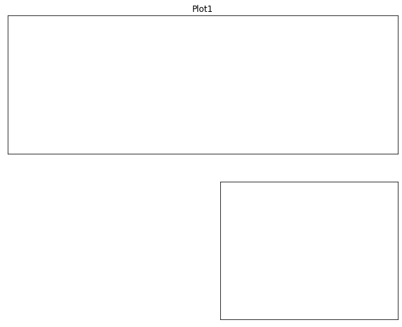
[13]:
import matplotlib.gridspec as gridspec
fig = plt.figure()
gs = gridspec.GridSpec(3, 3)
ax1 = plt.subplot(gs[:2, :2])
ax2 = plt.subplot(gs[0, 2])
ax3 = plt.subplot(gs[1, 2])
ax4 = plt.subplot(gs[-1, 0])
ax5 = plt.subplot(gs[-1, 1:])
plt.show()
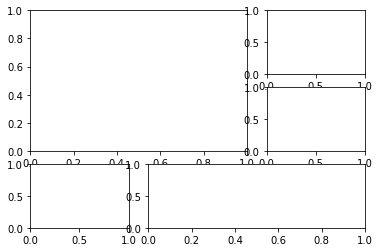
[14]:
axes1 = plt.subplot(2, 2, (1,3), title='Plot1')
axes2 = plt.subplot(2, 2, 2, title='Plot2')
axes3 = plt.subplot(2, 2, 4, title='Plot3')
plt.show()
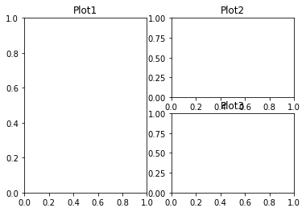
[15]:
import matplotlib.gridspec as gridspec
fig = plt.figure()
gs = gridspec.GridSpec(3, 3)
ax1 = plt.subplot(gs[0, :])
ax2 = plt.subplot(gs[1, :-1])
ax3 = plt.subplot(gs[1:, -1])
ax4 = plt.subplot(gs[-1, 0])
ax5 = plt.subplot(gs[-1, -2])
plt.show()
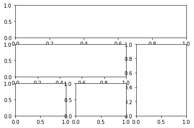
[16]:
import matplotlib
matplotlib.use('Agg')
import matplotlib.pyplot as plt
import numpy as np
import matplotlib.gridspec as gridspec
#Write your code here
def test_sine_wave_plot():
fig = plt.figure(figsize=(12,3))
ax = fig.add_subplot(111)
ax.set(
xlabel="Time (seconds)",
ylabel="Voltage (mV)",
title="Sine Wave",
xlim=(0,2),
ylim=(-1,1),
xticks=[0,0.2,0.4,0.6,0.8,1.0,1.2,1.4,1.6,1.8,2.0],
yticks=[-1,0,1]
)
t = np.linspace(0.0,2.0,num=200)
v = np.sin(2.5 * np.pi*t)
ax.plot(t,v,c='r',label="sin(t)")
ax.grid(linestyle="--")
ax.legend()
plt.savefig('./sinewave.png')
test_sine_wave_plot()
def test_multi_curve_plot():
fig = plt.figure(figsize=(12,3))
ax = fig.add_subplot(111)
ax.set(
xlabel="x",
ylabel="f(x)",
title="Linear, Quadratic, & Cubic Equations",
)
x = np.linspace(0.0,5.0,num=20)
y1 = x
y2 = x**2
y3 = x**3
ax.plot(x,y1,c='r',marker="o",label="y = x")
ax.plot(x,y2,c='g',marker="s",label="y = x**2")
ax.plot(x,y3,c='b',marker='^',label="y = x**3")
ax.legend()
plt.savefig('./multicurve.png')
test_multi_curve_plot()
def test_scatter_plot():
fig = plt.figure(figsize=(12,3))
ax = fig.add_subplot(111)
ax.set(
xlabel="Months",
ylabel="No. of Cars Sold",
title="Cats Sold by Company 'X' in 2017",
xlim=(0,13),
ylim=(20,100),
xticks=[1,3,5,7,9,11],
xticklabels=['Jan','Mar','May','Jul','Sep','Nov']
)
s = [50,60,55,50,70,65,75,65,80,90,93,95]
months = [1,2,3,4,5,6,7,8,9,10,11,12]
ax.scatter(months,s,c='r')
plt.savefig('./scatter.png')
test_scatter_plot()
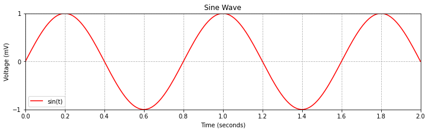


[17]:
import matplotlib
matplotlib.use('Agg')
import matplotlib.pyplot as plt
import numpy as np
import matplotlib.gridspec as gridspec
#Write your code here
def test_barplot_of_iris_sepal_length():
fig = plt.figure(figsize=(8,6))
ax = fig.add_subplot(111)
ax.set(
xlabel="Species",
ylabel="Sepal Length (cm)",
title="Mean Sepal Length of Iris Species",
xlim=(0,3),
ylim=(0,7),
xticks=[0.45,1.45,2.45],
xticklabels=['setosa','versicolor','virginica']
)
species = ['setosa','versicolor','virginica']
index = [0.2,1.2,2.2]
sepal_len = [5.01,5.94,6.59]
ax.bar(index,sepal_len,width=0.5,color='red',edgecolor='black')
plt.savefig('./bar_iris_sepal.png')
test_barplot_of_iris_sepal_length()
def test_barplot_of_iris_measurements():
fig = plt.figure(figsize=(8,6))
ax = fig.add_subplot(111)
ax.set(
xlabel="Species",
ylabel="Iris Measurements (cm)",
title="Mean Measurements of Iris Species",
xlim=(0.5,3.7),
ylim=(0,10),
xticks=[1.1,2.1,3.1],
xticklabels=['setosa','versicolor','virginica']
)
sepal_len = [ 5.01,5.94,6.59 ]
sepal_wd = [ 3.42,2.77,2.97 ]
petal_len = [1.46,4.26,5.55 ]
petal_wd = [ 0.24, 1.33,2.03]
species = ['setosa','versicolor','virginica']
species_index1 = [0.7,1.7,2.7]
species_index2 = [0.9,1.9,2.9]
species_index3 = [1.1,2.1,3.1]
species_index4 = [1.3,2.3,3.3]
sepal_len = [5.01,5.94,6.59]
ax.bar(species_index1 ,sepal_len,width=0.2,color='c',edgecolor='black',label="Sepal Length")
ax.bar(species_index2 ,sepal_wd,width=0.2,color='m',edgecolor='black',label="Sepal Width")
ax.bar(species_index3 ,petal_len,width=0.2,color='y',edgecolor='black',label="Petal Length")
ax.bar(species_index4 ,petal_wd,width=0.2,color='orange',edgecolor='black',label="Petal Width")
ax.legend()
plt.savefig('./bar_iris_measure.png')
test_barplot_of_iris_measurements()
def test_hbar_of_iris_petal_length():
fig = plt.figure(figsize=(12,5))
ax = fig.add_subplot(111)
ax.set(
xlabel="Petal Length (cm)",
ylabel="Species",
title="Mean Petal Length of Iris Species",
yticks=[0.45,1.45,2.45],
yticklabels=['setosa','versicolor','virginica']
)
species = ['setosa','versicolor','virginica']
index = [0.2,1.2,2.2]
petal_len = [1.46,4.26,5.55]
ax.barh(index,petal_len,height=0.5,color='c',edgecolor='black')
plt.savefig('./bar_iris_petal.png')
test_hbar_of_iris_petal_length()


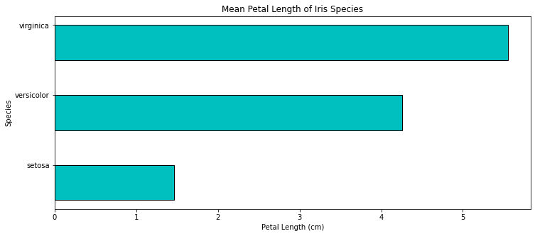
[18]:
import matplotlib
matplotlib.use('Agg')
import matplotlib.pyplot as plt
import numpy as np
import matplotlib.gridspec as gridspec
#Write your code here
def test_hist_of_a_sample_normal_distribution():
np.random.seed(100)
fig = plt.figure(figsize=(8,6))
ax = fig.add_subplot(111)
ax.set(
xlabel="X1",
ylabel="Bin Count",
title="Histogram of a Single Dataset"
)
x1 = 25 + 3*np.random.randn(1000)
ax.hist(x1,bins=30)
plt.savefig("./histogram_normal.png")
test_hist_of_a_sample_normal_distribution()
def test_boxplot_of_four_normal_distribution():
np.random.seed(100)
fig = plt.figure(figsize=(8,6))
ax = fig.add_subplot(111)
ax.set(
xlabel="Dataset",
ylabel="Value",
title="Box plot of Multiple Datasets"
)
x1 = 25 + 3.0*np.random.randn(1000)
x2 = 35 + 5.0*np.random.randn(1000)
x3 = 55 + 10.0*np.random.randn(1000)
x4 = 45 + 3.0*np.random.randn(1000)
labels = ['X1','X2','X3','X4']
ax.boxplot([x1,x2,x3,x4],labels=labels,notch=True,flierprops=dict(marker="+",),patch_artist=True)
plt.savefig("./box_distribution.png")
test_boxplot_of_four_normal_distribution()


[19]:
fig = plt.figure(figsize=(8,6))
ax = fig.add_subplot(111)
ax.set(title='Writing Text',
xlabel='X-Axis', ylabel='Y-Axis',
xlim=(0, 5), ylim=(0, 9))
x = [1, 2, 3, 4]
y = [2, 4, 6, 8]
ax.scatter(x, y, c=['green'], s=[60], edgecolor='black')
for i in range(len(x)):
str_temp = '({}, {})'.format(x[i] - 0.2, y[i] + 0.4)
ax.text(x[i] - 0.4, y[i] + 0.4, str_temp, fontsize=16)
plt.show()
<ipython-input-19-4284551b6031>:12: UserWarning: Matplotlib is currently using agg, which is a non-GUI backend, so cannot show the figure.
plt.show()

[20]:
import matplotlib
matplotlib.use('Agg')
import matplotlib.pyplot as plt
import numpy as np
import matplotlib.gridspec as gridspec
#Write your code here
def test_generate_plot_with_style1():
with plt.style.context('ggplot'):
fig = plt.figure(figsize=(8,6))
ax = fig.add_subplot(111)
ax.set(
xlabel="Species",
ylabel="Iris Measurements (cm)",
title="Mean Measurements of Iris Species",
xlim=(0.5,3.7),
ylim=(0,10),
xticks=[1.1,2.1,3.1],
xticklabels=['setosa','versicolor','virginica']
)
sepal_len=[5.01,5.94,6.59]
sepal_wd=[3.42,2.77,2.97]
petal_len=[1.46,4.26,5.55]
petal_wd=[0.24,1.33,2.03]
species = ['setosa','versicolor','virginica']
species_index1=[0.7,1.7,2.7]
species_index2=[0.9,1.9,2.9]
species_index3=[1.1,2.1,3.1]
species_index4=[1.3,2.3,3.3]
ax.bar(species_index1,sepal_len,width=0.2,label="Sepal Length")
ax.bar(species_index2,sepal_wd,width=0.2,label="Sepal Width")
ax.bar(species_index3,petal_len,width=0.2,label="Petal Length")
ax.bar(species_index4,petal_wd,width=0.2,label="Petal Width")
ax.legend()
plt.savefig("./plotstyle1.png")
test_generate_plot_with_style1()
def test_generate_plot_with_style2():
with plt.style.context('seaborn-colorblind'):
fig = plt.figure(figsize=(8,6))
ax = fig.add_subplot(111)
ax.set(
xlabel="Species",
ylabel="Iris Measurements (cm)",
title="Mean Measurements of Iris Species",
xlim=(0.5,3.7),
ylim=(0,10),
xticks=[1.1,2.1,3.1],
xticklabels=['setosa','versicolor','virginica']
)
sepal_len=[5.01,5.94,6.59]
sepal_wd=[3.42,2.77,2.97]
petal_len=[1.46,4.26,5.55]
petal_wd=[0.24,1.33,2.03]
species = ['setosa','versicolor','virginica']
species_index1=[0.7,1.7,2.7]
species_index2=[0.9,1.9,2.9]
species_index3=[1.1,2.1,3.1]
species_index4=[1.3,2.3,3.3]
ax.bar(species_index1,sepal_len,width=0.2,label="Sepal Length")
ax.bar(species_index2,sepal_wd,width=0.2,label="Sepal Width")
ax.bar(species_index3,petal_len,width=0.2,label="Petal Length")
ax.bar(species_index4,petal_wd,width=0.2,label="Petal Width")
ax.legend()
plt.savefig("./plotstyle2.png")
test_generate_plot_with_style2()
def test_generate_plot_with_style3():
with plt.style.context('grayscale'):
fig = plt.figure(figsize=(8,6))
ax = fig.add_subplot(111)
ax.set(
xlabel="Species",
ylabel="Iris Measurements (cm)",
title="Mean Measurements of Iris Species",
xlim=(0.5,3.7),
ylim=(0,10),
xticks=[1.1,2.1,3.1],
xticklabels=['setosa','versicolor','virginica']
)
sepal_len=[5.01,5.94,6.59]
sepal_wd=[3.42,2.77,2.97]
petal_len=[1.46,4.26,5.55]
petal_wd=[0.24,1.33,2.03]
species = ['setosa','versicolor','virginica']
species_index1=[0.7,1.7,2.7]
species_index2=[0.9,1.9,2.9]
species_index3=[1.1,2.1,3.1]
species_index4=[1.3,2.3,3.3]
ax.bar(species_index1,sepal_len,width=0.2,label="Sepal Length")
ax.bar(species_index2,sepal_wd,width=0.2,label="Sepal Width")
ax.bar(species_index3,petal_len,width=0.2,label="Petal Length")
ax.bar(species_index4,petal_wd,width=0.2,label="Petal Width")
ax.legend()
plt.savefig("./plotstyle3.png")
test_generate_plot_with_style3()
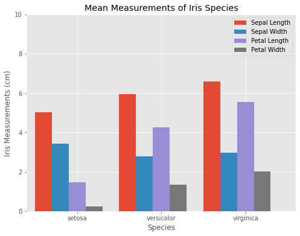


[28]:
import matplotlib
matplotlib.use('Agg')
import matplotlib.pyplot as plt
import numpy as np
import matplotlib.gridspec as gridspec
#Write your code here
def test_generate_figure1():
t = np.arange(0.0,5.0,0.01)
s1 = np.sin(2*np.pi*t)
s2 = np.sin(4*np.pi*t)
fig = plt.figure(figsize=(8,6))
axes1 = plt.subplot(2,1,1,title="Sin(2*pi*x)")
axes1.plot(t,s1)
axes2 = plt.subplot(2,1,2,title="Sin(4*pi*x)",sharex=axes1, sharey=axes1)
axes2.plot(t,s2)
plt.savefig("./testfigure1.png")
test_generate_figure1()
def test_generate_figure2():
np.random.seed(1000)
x = np.random.rand(10)
y= np.random.rand(10)
z= np.sqrt(x**2 + y**2)
fig = plt.figure(figsize=(8,6))
axes1 = plt.subplot(2,2,1,title="Scatter plot with Upper Triangle Markers")
axes1.scatter(x,y,s=80,c=z,marker="^")
axes1.set_xticks([0.0,0.4,0.8,1.2])
axes1.set_yticks([-0.2,0.2,0.6,1.0])
axes2 = plt.subplot(2,2,2,title="Scatter plot with Plus Markers")
axes2.scatter(x,y,s=80,c=z,marker="+")
axes2.set_xticks([0.0,0.4,0.8,1.2])
axes2.set_yticks([-0.2,0.2,0.6,1.0])
axes3 = plt.subplot(2,2,3,title="Scatter plot with Circle Markers")
axes3.scatter(x,y,s=80,c=z,marker="o")
axes3.set_xticks([0.0,0.4,0.8,1.2])
axes3.set_yticks([-0.2,0.2,0.6,1.0])
axes4 = plt.subplot(2,2,4,title="Scatter plot with Diamond Markers")
axes4.scatter(x,y,s=80,c=z,marker="d")
axes4.set_xticks([0.0,0.4,0.8,1.2])
axes4.set_yticks([-0.2,0.2,0.6,1.0])
plt.tight_layout()
plt.savefig("./testfigure2.png")
test_generate_figure2()
def test_generate_figure3():
x= np.arange(1,101)
y1 = x
y2 = x**2
y3 = x**3
fig = plt.figure(figsize=(8,6))
g = gridspec.GridSpec(2,2)
axes1 = plt.subplot(g[0,0],title="y = x")
axes1.plot(x,y1)
axes2 = plt.subplot(g[1,0],title="y = x**2")
axes2.plot(x,y2)
axes3 = plt.subplot(g[:,1],title="y = x**3")
axes3.plot(x,y3)
plt.tight_layout()
plt.savefig("./testfigure3.png")
test_generate_figure3()
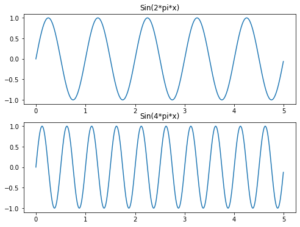
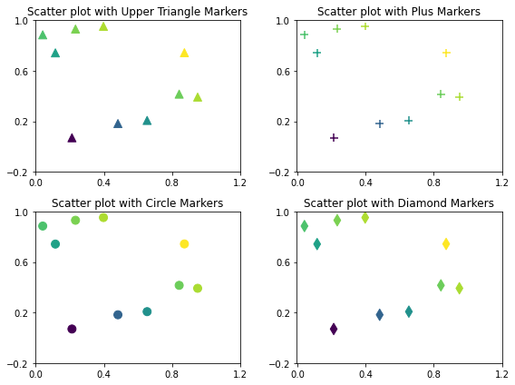